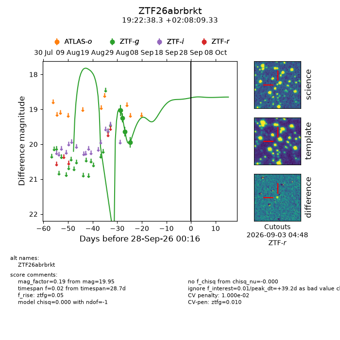
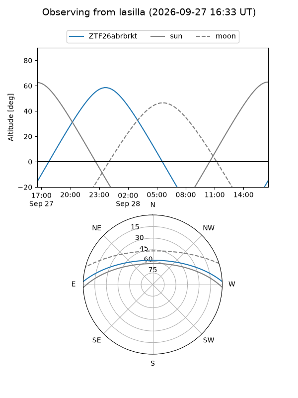
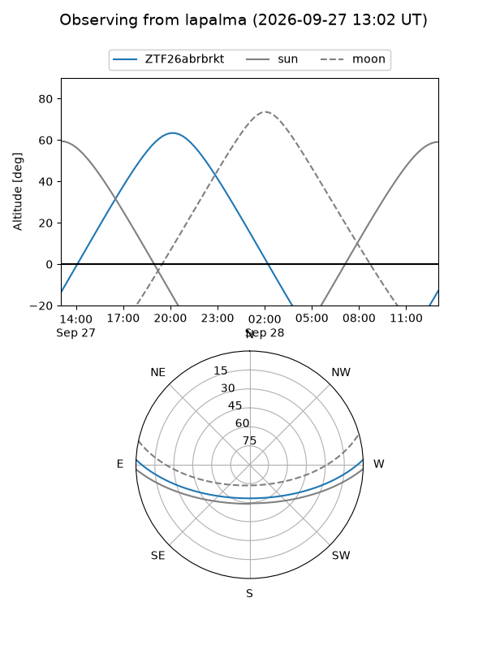
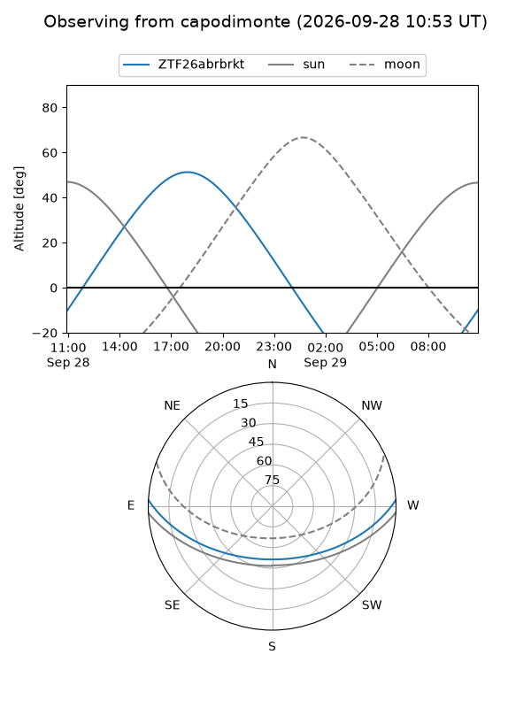
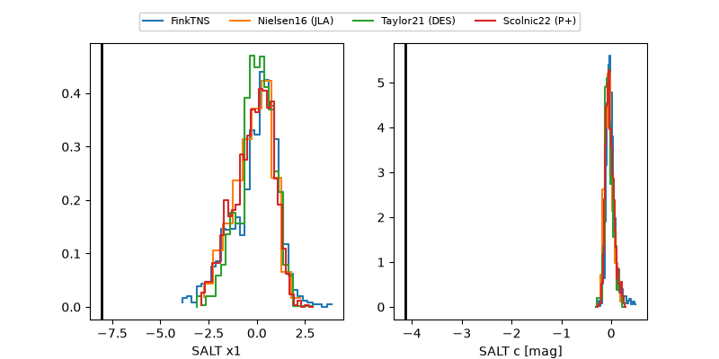

ZTF26abrbrkt
Target ZTF26abrbrkt at 2026-09-28 10:43
Aliases and brokers:
FINK-ZTF: ztf.fink-portal.org/ZTF26abrbrkt
Lasair-ZTF: lasair-ztf.lsst.ac.uk/objects/ZTF26abrbrkt
ALeRCE-ZTF: alerce.online/object/ZTF26abrbrkt
Direct TNS query: direct search
alt names
ZTF26abrbrkt (ztf,fink_ztf)
Coordinates:
equatorial (ra, dec) = 290.6594,+2.13593
equatorial (HMS+DMS) = 19:22:38.25,+02:08:09.33
galactic (l, b) = (38.4135,-5.95258)
Flags:
peak dt: +39.7
likely cv: !!
Photometry:
last ztfg=19.95
4 ztfg detections
Lightcurve

Visibility



Additional plots
